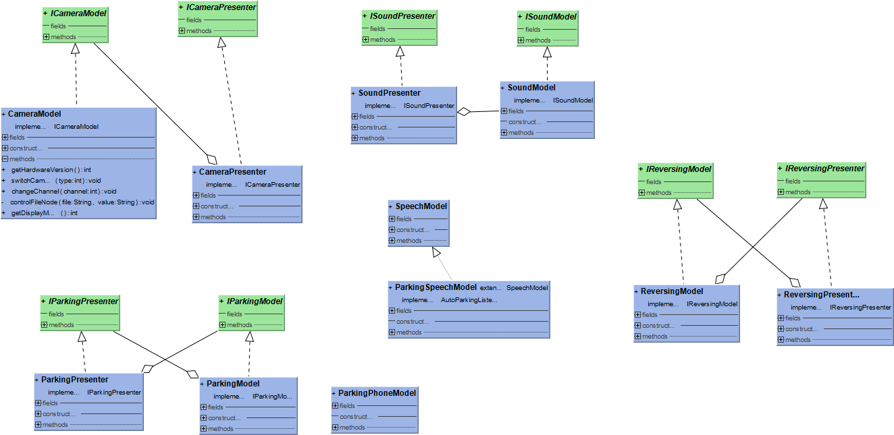

MVP

 数据流
数据流 车辆车位数据流.
车辆车位数据流. 数据种类
数据种类 档位型号
档位型号 泊车信号
泊车信号 车速信号
车速信号 进度信号
进度信号车辆车位数据流

信号
序号 | 信号标识 | 信号说明 | 备注 |
0 | 0 | 泊车退出后,清除数 | CHECKED |
1 | 1 | 自动泊车准备就绪,点击开始 | |
2 | 2 | 请松开制动踏板开始泊车,点击取消 | |
3 | 3 | 自动泊车进行中 | |
4 | 4 | 泊车暂停 | |
5 | 5 | 自动泊车已退出 | |
6 | 6 | 自动泊车已完成 | |
7 | 7 | 自动泊车已取消 | |
8 | 8 | 自动泊出进行中 | |
9 | 9 | 泊出暂停 | |
10 | 10 | 自动泊出已取消 | |
11 | 11 | 自动泊出已完成 | |
12 | 12 | 请松开制动踏板开始自动泊出，点击取消 | |
13 | 13 | 自动泊车暂停，点击恢复泊车 | |
14 | 14 | 自动泊出暂停，点击恢复泊出 | |
15 | 15 | 自动泊出准备就绪，点击开始 | |
16 | 16 | 无提示语，无按钮,进入钥匙泊车模式 | |
17 | 17 | 不清除数据，倒车 | |
18 | 18 | 超级泊车模式，请降低车速 | |
19 | 19 | 超级泊车模式，车位搜索中 | |
20 | 20 | 超级泊车模式，已经找到可泊车位 | |
21 | |||
22 | 22 | 超级泊车模式，车速为0，提示用户开始泊车 | |
23 | |||
24 | |||
25 | |||
26 | |||
27 | |||
28 | |||
29 | |||
30 |
API
泊车接口
IParkingPresenter
定义:
泊车Presenter层接口
Features:
IParkingModel
定义:
泊车数据模型类
Features:
接口和ParkiingPresenter重合了,认为需要重新设计
语音
AutoParkingListener
定义:
语音泊车接口
接口方法:
//语音泊车激活
void onActivate();
//语音泊车退出
void onExit();
//开始语音泊车
void onParkStart();
// 语音选车位
void onParkCarportCount(ParkingPositionBean var1);
ParkingSpeechModel
定义:
实现语音泊车接口,主要用来消息中转
倒车
IReversingView
定义:
倒车雷达数据接口
方法:
/**
* 后向雷达数据
*
* @param minDist
*/
void onDataFUpdate(float minDist);
/**
* 前向雷达数据
*
* @param minDist
*/
void onDataBUpdate(float minDist);
/**
* 注入 P 层
*
* @param reversingPresenter
*/
void bindPresenter(ReversingPresenter reversingPresenter);
/**
* 注入 camera P 层
*
* @param cameraPresenter
*/
void bindPresenter(CameraPresenter cameraPresenter);
void onPathGuideViewUpdate(float angle);
void onRadarErrorUpdate(Pair<Boolean, Boolean> obj);
Camera 相机
ICameraModel
定义:
ICameraPresenter
定义:
方法:
//获取硬件版本
int getHardwareVersion();
//切换摄像头
void switchCamera(int type);
//是放资源
void release();
//获取比例
float getWHRate();
//通道切换
void changeChannel(int channel);
音效
ISoundModel
定义:
初始化和释放EventBus. 接受SCU消息,播放相应的预警音效